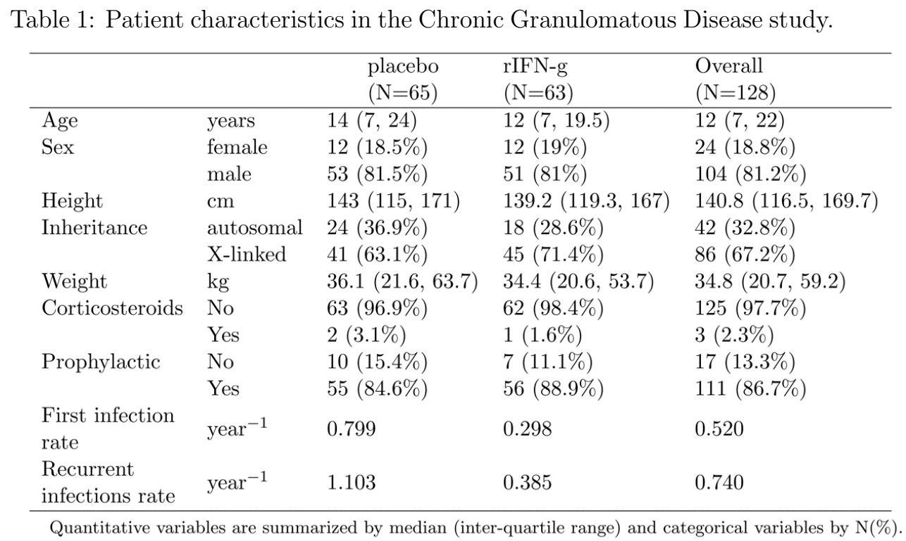

Suppose that patient enrollment (and randomization) is uniform in calendar time \([0, \tau_b]\) and that the study is terminated at calendar time \(\tau_c\)\((\tau_c>\tau_b)\). What is the distribution of the administrative censoring time? (Hint: see Fig. 1.1) Further suppose that patients are subject to a random LTFU following an exponential distribution with hazard \(\lambda_L\) (whose survival function is \(\exp(-\lambda_L t)\)). Write out the survival function for the censoring time \(C\) (i.e., the earlier of administrative censoring and LTFU times).
The administrative censoring time \(C_A\) is defined as the duration between time of enrollment, \(R\sim \mbox{Unif}[0, \tau_b]\), and time of study termination \(\tau_c\) (see Fig. 1.1). So \[C_A = (\tau_c - R) \sim \mbox{Unif}[\tau_c - \tau_b, \tau_c].\] As a result, \[{\rm pr}(C_A > t) = \left(\frac{\tau_c - t}{\tau_b}\wedge 1\right)_+
=\left\{
\begin{array}{lr}
1& 0\leq t \leq \tau_c - \tau_b\\
\frac{\tau_c - t}{\tau_b}& \tau_c - \tau_b < t \leq \tau_c\\
0 & t\geq \tau_c
\end{array}
\right.,
\] where \(x_+=\max(x, 0)\).
On the other hand, the survival function for LTFU \(C_L\) is \({\rm pr}(C_L > t) = \exp(-\lambda_L t)\). Assuming \(C_A\indep C_L\), the survival function for the overall censoring time \(C\) is \[\begin{align}
{\rm pr}(C > t)&={\rm pr}(C_A\wedge C_L > t)\\
&={\rm pr}(C_A > t){\rm pr}(C_L > t)\\
&=\left(\frac{\tau_c - t}{\tau_b}\wedge 1\right)_+\exp(-\lambda_L t)
\end{align}\]
Problem 1.2
Question
Show that \(S_{\rm imp}(t)\leq S(t)\) for all \(t\) whether censoring is independent or not. Give a simple sufficient condition for strict inequality under \(C\indep T\).
Because \(X=\min(T,C)\), we have that \(X\leq T\) always. Therefore, \(X>t\) implies \(T>t\). Hence \(\pr(X>t)\leq \pr(T>t)\). Under independence, we have that \[
S_{\rm imp}(t)=\pr(X>t)=\pr(T>t)\pr(C>t)=S(t)\pr(C>t),
\] which is strictly less than \(S(t)\) if \(\pr(C>t)<1\) and \(S(t)>0\). That is, if there is a positive probability of censoring before \(t\) and a positive probability of failure after it.
Problem 1.3 (extra credit)
Question
Formulate a survival function estimator under the “nonevent-imputation” approach described in Section 1.2.2 and show that it overestimates \(S(t)\) whether censoring is independent or not. Give a simple sufficient condition for strict overestimation under \(C\indep T\).
Non-event imputation means imputing event time to \(\infty\) whenever censored, i.e., \[
\hat T_i = \left\{
\begin{array}{cc}
T_i, &\delta_i =1\\
\infty,&\delta_i =0
\end{array}
\right.
\] So the empirical survival function based on the \(\hat T_i\) is \[\begin{align}
n^{-1}\sum_{i=1}^n I(\hat T_i >t) &= n^{-1}\sum_{i=1}^n\left\{\delta_iI(T_i > t) + (1-\delta_i)\right\}\\
&= 1 - n^{-1}\sum_{i=1}^n\delta_i I(T_i\leq t)\\
&\to 1- \pr(T\leq t\wedge C)\\
&= \pr(T > t\wedge C)\\
&\geq \pr(T > t)\\
& = S(t).
\end{align}\] This shows that the estimator overestimates \(S(t)\) regardless of whether censoring is independent. Under \(C\indep T\), \[
\pr(T > t\wedge C) = E\{S(C\wedge t)\}.
\] It turns out that there is no “simple” condition for the right hand side to be strictly greater than \(S(t)\). But the following condition works: (1) there exists \(t_0 < t\) such that \(S(t_0)> S(t)\); and (2) \(\pr(C\leq t_0)>0\). That is, there is a positive probability of censoring before a point to the left of \(t\) where the survival rate is strictly greater than \(S(t)\). The proof is left as an exercise.
Problem 1.8
Question
Summarize the CGD (chronic granulomatous disease) study data described in Example 1.3 by the randomized treatment group in terms of patient baseline characteristics and event rates. Comment on the balance of baseline characteristics between the treatment arms. Also be sure to include the event rates for both
the first infection;
recurrent infections (including the first).
Organize your results in a table suitable for inclusion as “Table 1” in a medical research paper. (The study dataset is in cgd.txt.)
The baseline patient characteristics and events rates for the CGD study are summarized by treatment arm in Table 1 below. Most of the baseline characteristics are well balanced between the randomized arms, except that the proportion of X-linked inheritance is slightly higher in the treatment arm (71.4%) than in the control arm (63.1%). The event rates for both first and recurrent infections are substantially lower in the treatment arm.

Base R approach
## Read in the CGD datadata <-read.table("Chronic Granulomatous Disease Study//cgd.txt")head(data)############################################################ Table 1 Patient characteristics for the CGD study#############################################################A function calculating median (IQR) by ## binary group## Input: y=quantitative variable## trt=binary group variable## decp=number of decimal points## Output: a row vector containing median (IQR)## by the two levels of trt and overall Mean.IQR.by.trt=function(y,trt,decp=1){ groups=sort(unique(trt)) all=quantile(y) g1=quantile(y[trt==groups[1]]) g2=quantile(y[trt==groups[2]]) result=matrix(NA,1,3)colnames(result)=c(groups,"Overall") result[1,1]=paste0(round(g1[3],decp)," (",round(g1[2],decp),", ",round(g1[4],decp),")") result[1,2]=paste0(round(g2[3],decp)," (",round(g2[2],decp),", ",round(g2[4],decp),")") result[1,3]=paste0(round(all[3],decp)," (",round(all[2],decp),", ",round(all[4],decp),")")return(result)}##A function calculating N (%) by ## binary group## Input: x=categorical variable with p levels## trt=binary group variable## decp=number of decimal points of %## Output: a px3 matrix containing N (%) for each level of x## by the two levels of trt and overall N.prct.by.trt=function(x,trt,decp=1){ groups=sort(unique(trt)) x.levels=sort(unique(x)) p=length(x.levels) n=length(x) n1=length(x[trt==groups[1]]) n2=length(x[trt==groups[2]]) result=matrix(NA,p,3)colnames(result)=c(groups,"Overall")rownames(result)=x.levelsfor (i in1:p){ n1i=sum(x[trt==groups[1]]==x.levels[i]) n2i=sum(x[trt==groups[2]]==x.levels[i]) ni=sum(x==x.levels[i]) result[i,1]=paste0(n1i," (",round(n1i/n1*100,decp),"%)") result[i,2]=paste0(n2i," (",round(n2i/n2*100,decp),"%)") result[i,3]=paste0(ni," (",round(ni/n*100,decp),"%)") }return(result)}##Baseline characteristics by treatment arm:# sex# Sex of each patient(male, female)# # age# Age of each patient at study entry, in years# # height# Height of each patient at study entry, in cm# # weight# Weight of each patient at study entry, in kg# # inherit# Pattern of inheritance (autosomal recessive, X-linked)# # steroids# Using corticosteroids at times of study centry(1=Yes, 0=No)# # propylac# Using prophylactic antibiotics at time of study entry(1=Yes, 0=No)##################################################### To calculate the baseline characteristics,# first subset to one record per patient.# We do this by getting the first record #####################################################o <-order(data$id,data$time)data <- data[o,]dat <- data[!duplicated(data$id),]n <-nrow(dat)#n=128: number of subjectstable1 <-rbind(N.prct.by.trt(x=dat$sex,trt=dat$trt),Mean.IQR.by.trt(y=dat$age,trt=dat$trt),Mean.IQR.by.trt(y=dat$hght,trt=dat$trt),Mean.IQR.by.trt(y=dat$wght,trt=dat$trt),N.prct.by.trt(x=dat$inherit,trt=dat$trt),N.prct.by.trt(x=dat$stero,trt=dat$trt),N.prct.by.trt(x=dat$proph,trt=dat$trt))noquote(table1)###############################################Calculate the *first event* rates (per year)# use the dataset "dat", since it contains# the first record for each patient#############################################Numerator: total # of events# note that event is coded as status=2num.FE <-c(sum(dat$status[dat$trt=="placebo"]>0), sum(dat$status[dat$trt=="rIFN-g"]>0), sum(dat$status>0))#Demoninator: total length of follow-up (year)denom.FE <-c(sum(dat$time[dat$trt=="placebo"]), sum(dat$time[dat$trt=="rIFN-g"]), sum(dat$time))/12#death rateround(num.FE/denom.FE,3)##############################Recurrent event rate ############################### the numerator is easy: simply the numbers of records# with non-zero statusnum.rec <-c(sum(data$status[data$trt=="placebo"]>0), sum(data$status[data$trt=="rIFN-g"]>0), sum(data$status>0))# Denominator should be the sum of the longest# follow-up for each patient#sort the data by descending order of timeo <-order(data$id,data$time,decreasing =TRUE)data <- data[o,]# get the first record, which contains# the overall length of follow-up# for each patientdat.last <- data[!duplicated(data$id),]denom.rec <-c(sum(dat.last$time[dat.last$trt=="placebo"]), sum(dat.last$time[dat.last$trt=="rIFN-g"]), sum(dat.last$time))/12#recurrent event rateround(num.rec/denom.rec,3)
The following uses gtsummary to summarize the CGD study data.
Using gtsummary
library(gtsummary)library(tidyverse)## Read in the CGD datadf <-read.table("Data//Chronic Granulomatous Disease Study//cgd.txt")# head(df)# Patient-level summarydf |>group_by(id) |>slice(1) |># Take the first record for each patienttbl_summary(by = trt, # by treatmentinclude =c(age, sex, hght, wght, inherit, stero, proph) # variables tabulated ) |>add_overall(last =TRUE) # add overall column to the *right*
Characteristic
placebo, N = 651
rIFN-g, N = 631
Overall, N = 1281
age
14 (7, 24)
12 (7, 20)
12 (7, 22)
sex
female
12 (18%)
12 (19%)
24 (19%)
male
53 (82%)
51 (81%)
104 (81%)
hght
143 (115, 171)
139 (119, 167)
141 (117, 170)
wght
36 (22, 64)
34 (21, 54)
35 (21, 59)
inherit
autosomal
24 (37%)
18 (29%)
42 (33%)
X-linked
41 (63%)
45 (71%)
86 (67%)
stero
2 (3.1%)
1 (1.6%)
3 (2.3%)
proph
55 (85%)
56 (89%)
111 (87%)
1 Median (IQR); n (%)
Using gtsummary
# Event ratesdf |>group_by(id, trt) |># compute patient-level summary of events and follow-up timessummarize(first_event =any(status ==1), # first event: 1 or 0n_event =sum(status ==1), # number of eventsfirst_event_fu =min(time) /12, # follow-up time (yrs) for the first eventtot_event_fu =max(time) /12# total follow-up time (yrs) ) |>group_by(trt) |># summarize by groupsummarize(first_event_rate =sum(first_event) /sum(first_event_fu), # first event raterec_event_rate =sum(n_event) /sum(tot_event_fu) # recurrent event rate ) |> knitr::kable(caption ="Event rates by treatment arm")